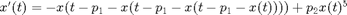
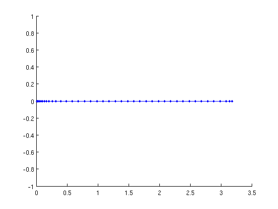
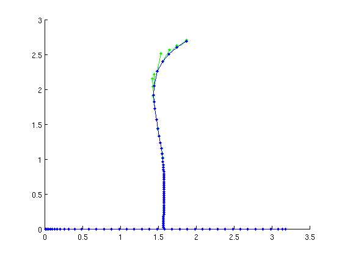
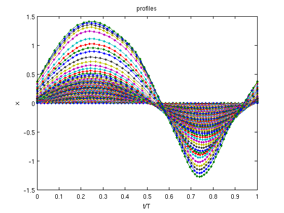
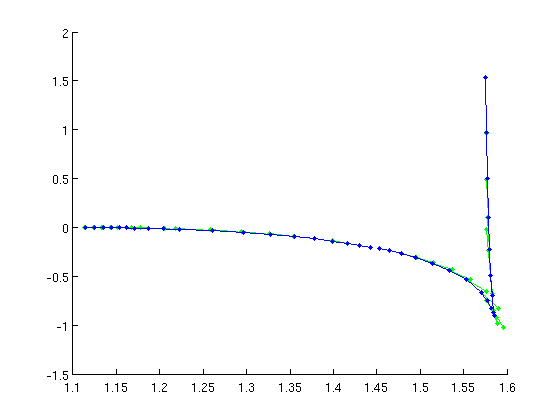
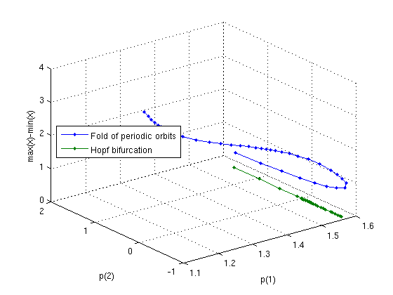

Test state-dependent delay equations with three levels of nesting
% (c) DDE-BIFTOOL v. 3.1.1(20), 11/04/2014
The equation is

The parameter p(1) controls the delay at the Hopf bifurcation, p(2) controls stability of the periodic orbits at sufficiently large amplitude without influencing criticality of the Hopf bifurcation.
Contents
- Equation definition
- Branch of trivial Equilibria
- Stability of equilibria
- Branch off at Hopf bifurcation
- Periodic orbits continued in p(1)
- Stability of periodic orbits
- Profiles of periodic orbits
- Save data
- Fold of periodic orbits
- Fold of periodic orbits
- Stability of periodic orbits at fold
- Plot two-parameter bifurcation diagram in 3d
- Save all data
clear close all addpath('../../ddebiftool/',... '../../ddebiftool_extra_psol/',... '../../ddebiftool_utilities/');
Equation definition
Change ntau to change the level of nesting.
dim=1; ntau=3; rhs=@(x,p)-x(1,ntau+1,:)+p(2)*x(1,1,:).^5; sys_ntau=@()ntau; tau=@(nr,x,p)p(1)+x(1,nr,:); funcs=set_funcs('sys_rhs',rhs,'sys_ntau',sys_ntau,'sys_tau',tau,'x_vectorized',true);
Branch of trivial Equilibria
x=0 is always the only equlibrium.
[eqbr,suc]=SetupStst(funcs,'contpar',1,'x',zeros(dim,1),'parameter',[0,-0.2],... 'max_bound',[1,pi],'max_step',[1,0.1]); if ~suc error('equilibrium not found'); end figure(1);clf eqbr=br_contn(funcs,eqbr,100);
BR_CONTN warning: boundary hit.
Stability of equilibria
The family of trivial equlibria loses stability in a Hopf bifurcation at p(1)=pi/2.
[eqnunst,dom,triv_defect,eqbr.point]=... GetStability(eqbr,'funcs',funcs,'points',2:length(eqbr.point)); %#ok<ASGLU>
Branch off at Hopf bifurcation
At the Hopf bifurcation a family of periodic orbits branches off. Its stability close to the Hopf bifurcation depends on the level of nesting ntau.
indhopf=find(diff(eqnunst)==2,1,'first'); [per,suc]=SetupPsol(funcs,eqbr,indhopf,'degree',3,'intervals',20,... 'print_residual_info',1); if ~suc error('initialization of periodic orbits failed'); end
it=1, res=0.0482356 it=2, res=0.00329791 it=3, res=5.52051e-06 it=4, res=5.21262e-11 it=1, res=0.00172065 it=2, res=2.3813e-08 it=3, res=7.85294e-16 it=1, res=2.30416e-05 it=2, res=6.08765e-13
Periodic orbits continued in p(1)
The family of periodic orbits folds back and forth for ntau=3.
per.parameter.max_step=[0,0.01]; per=br_contn(funcs,per,30); per.parameter.max_step=[]; per=br_contn(funcs,per,20);
it=1, res=0.00461228 it=2, res=1.72923e-07 it=3, res=1.8413e-15 it=1, res=0.00604274 it=2, res=2.96324e-07 it=3, res=3.224e-15 it=1, res=4.28683e-05 it=2, res=2.42044e-12 it=1, res=0.00641346 it=2, res=3.34728e-07 it=3, res=4.3459e-15 it=1, res=0.00640489 it=2, res=3.32383e-07 it=3, res=7.13953e-15 it=1, res=0.00637141 it=2, res=3.26834e-07 it=3, res=8.31385e-15 it=1, res=0.000127837 it=2, res=4.00301e-11 it=1, res=0.00635395 ...
Stability of periodic orbits
The only source of instability is the fold such that periodic orbits are either stable or order-1 unstable.
[pernunst,dom,triv_defect,per.point]=... GetStability(per,'exclude_trivial',true,'funcs',funcs); %#ok<ASGLU> fprintf('maximum error of trivial Floquet multiplier: %g\n',max(abs(triv_defect)));
maximum error of trivial Floquet multiplier: 0.00272839
Profiles of periodic orbits
ppars=arrayfun(@(x)x.parameter(1),per.point); pmeshes=cell2mat(arrayfun(@(x)x.mesh(:),per.point,'uniformoutput',false)); pprofs=cell2mat(arrayfun(@(x)x.profile(1,:)',per.point,'uniformoutput',false)); figure(2);clf plot(pmeshes,pprofs,'.-'); xlabel('t/T'); ylabel('x'); title('profiles');
Save data
save(sprintf('sd_basic_per%d.mat',ntau));
Fold of periodic orbits
A two-parameter continuation of the folds of periodic orbits shows that the fold is not present for small p(2). We start from the upper fold (last point where the number of Floquet multipliers shrinks by one).
disp('Fold initialization') pf_ind0=find(diff(pernunst)==-1,1,'last'); per.method.point.print_residual_info=1; [pfuncs,pbr,suc]=SetupPOfold(funcs,per,pf_ind0,'contpar',[1,2],'dir',1,'step',0.01); if ~suc error('initialization of folds of periodic orbits failed'); else disp('PO folds initialized'); end
Fold initialization it=1, res=0.126785 it=2, res=0.49285 it=3, res=0.00491929 it=4, res=2.71476e-07 it=5, res=1.14886e-10 it=1, res=0.136447 it=2, res=6.32573e-06 it=3, res=3.24245e-10 it=1, res=2.16765 it=2, res=0.148515 it=3, res=0.000559371 it=4, res=1.3352e-07 it=5, res=5.81942e-11 it=1, res=0.12327 it=2, res=5.46621e-06 it=3, res=4.80037e-10 PO folds initialized
Fold of periodic orbits
continued in two parameters p(1:2).
figure(3);clf pbr=br_contn(pfuncs,pbr,20); pbr=br_rvers(pbr); pbr=br_contn(pfuncs,pbr,20);
it=1, res=0.639127 it=2, res=0.000837267 it=3, res=4.26308e-07 it=4, res=6.94925e-11 it=1, res=0.843676 it=2, res=0.00198602 it=3, res=1.2602e-06 it=4, res=8.57065e-11 it=1, res=0.120612 it=2, res=6.60979e-06 it=3, res=8.00866e-10 it=1, res=1.13654 it=2, res=0.00362158 it=3, res=3.17606e-06 it=4, res=3.26759e-10 it=1, res=1.44892 it=2, res=0.00618518 it=3, res=8.10291e-06 it=4, res=1.29976e-09 it=1, res=1.79499 ...
Stability of periodic orbits at fold
We compute the stability of the periodic orbits at the fold excluding the two Floquet multipliers closest to unity in pfnunst. All orbits are stable transversal to the fold direction.
pf=pfuncs.get_comp(pbr.point,'solution'); [pfnunst,dom,triv_defect,pfs]=GetStability(pf,'exclude_trivial',true,... 'locate_trivial',@(p)[1,1],'funcs',funcs); pfstab=[pfs(:).stability];
Plot two-parameter bifurcation diagram in 3d
axes: p(1), p(2) and max(x)-min(x). The hopf bifurcation is independent of p(2)
pfpars=cell2mat(arrayfun(@(x)x.parameter(1:2)',pfs,'uniformoutput',false)); pfmeshes=cell2mat(arrayfun(@(x)x.mesh(:),pfs,'uniformoutput',false)); pfprofs=cell2mat(arrayfun(@(x)x.profile(1,:)',pfs,'uniformoutput',false)); hpars=per.point(1).parameter; figure(4);clf plot3(pfpars(1,:),pfpars(2,:),max(pfprofs)-min(pfprofs),'.-',... hpars(1)+0*pfpars(1,:),pfpars(2,:),0*pfpars(1,:),'.-'); grid on legend({'Fold of periodic orbits','Hopf bifurcation'},'location','west') xlabel('p(1)'); ylabel('p(2)'); zlabel('max(x)-min(x)');
Save all data
save('NestedPOfold.mat');